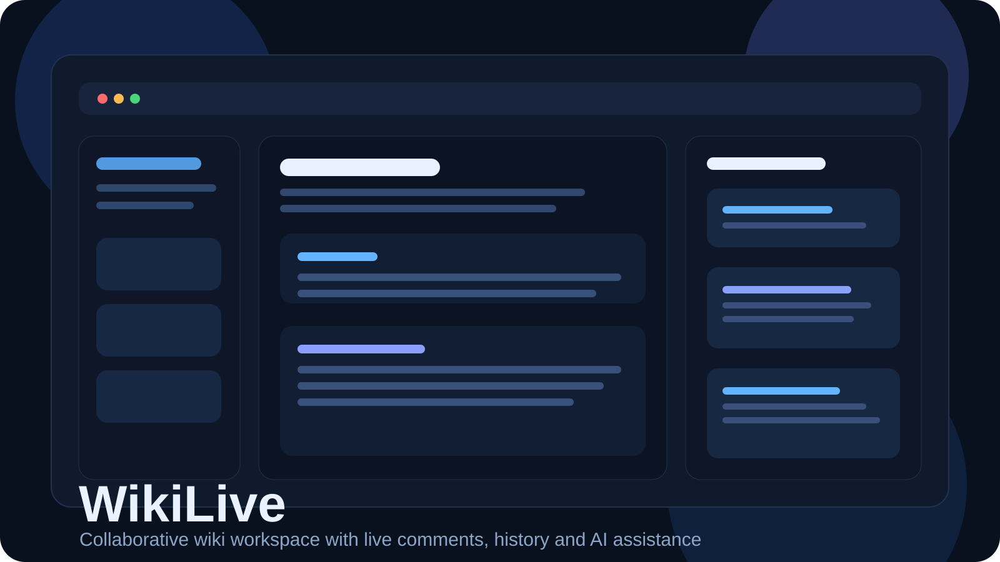
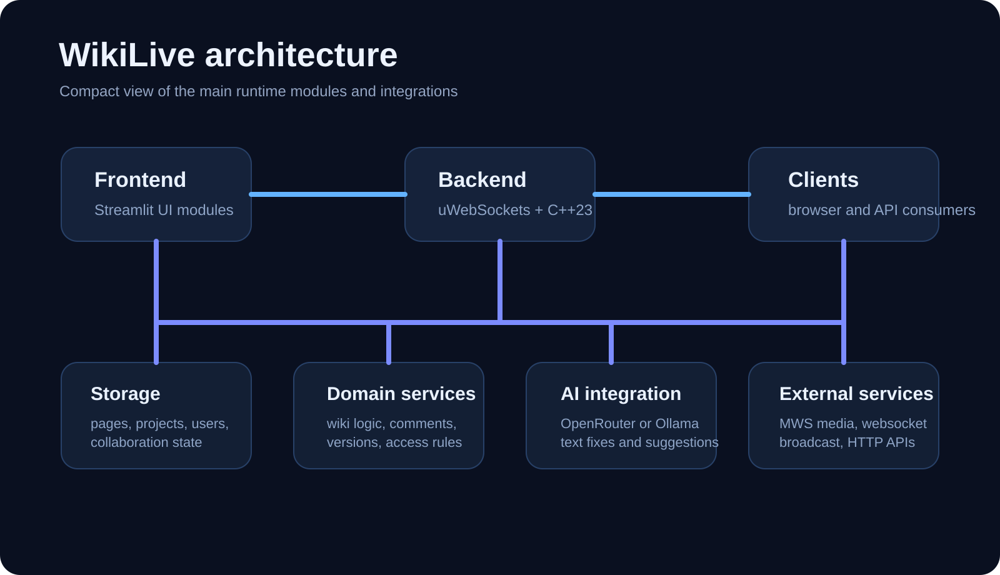
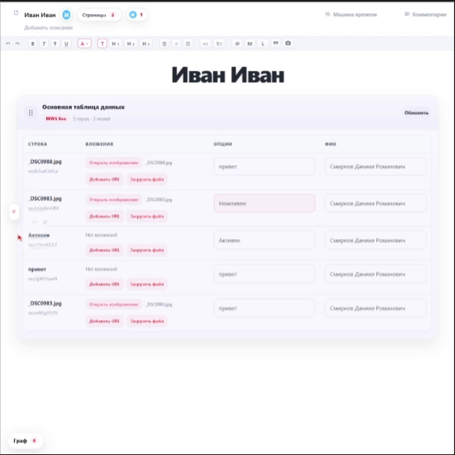
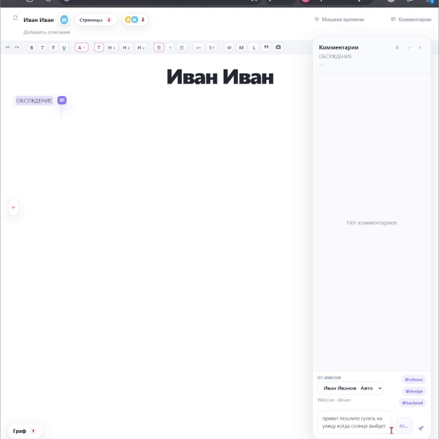
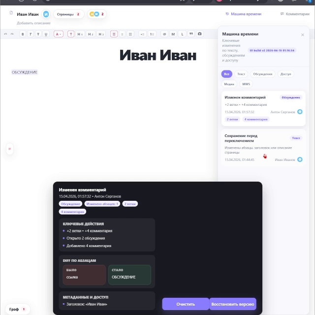

Structured collaboration
Threaded comments support replies, likes, pause and resume flows, edit and delete actions, and resolution tracking directly on page content.
WikiLive brings together fast page editing, threaded comments, time-machine history, access control, media blocks, and AI-powered writing helpers in one compact workflow. The stack is built around a C++ backend and a Streamlit UI, with room for live updates through WebSocket-based collaboration.

Designed for teams that need more than a simple notes page: discussion, moderation, revision tracking, and assisted editing are built into the product flow.
Threaded comments support replies, likes, pause and resume flows, edit and delete actions, and resolution tracking directly on page content.
History snapshots and time-machine navigation make it possible to inspect revisions, compare states, and roll back page content when needed.
AI prompts can improve wording, suggest inserts, and help with content polishing while MWS blocks make it easier to pull media into the page.
The repository includes the original demo capture. It can be used both as a product walkthrough and as a source for screenshots.

Frames below are generated from the included product demo and highlight the main working surfaces of the application.

Editing workspace with project navigation and live content area.

Discussion mode with contextual comments and collaboration actions.

Version history and page recovery workflow for controlled changes.
The application separates UI, HTTP routing, core orchestration, storage, and external integrations into clear modules, which keeps the feature surface manageable despite a broad workflow.